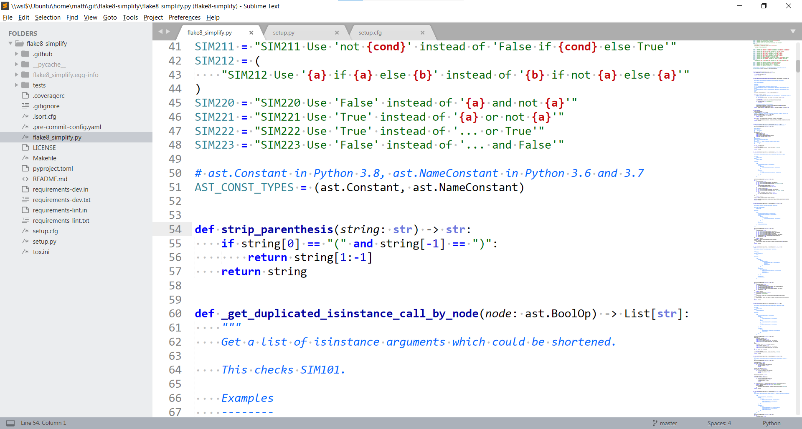
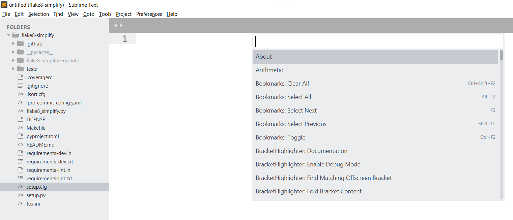
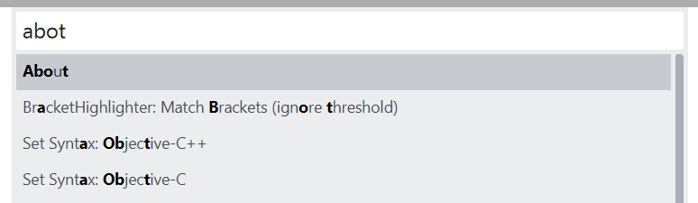
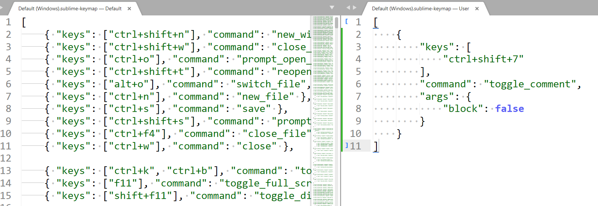
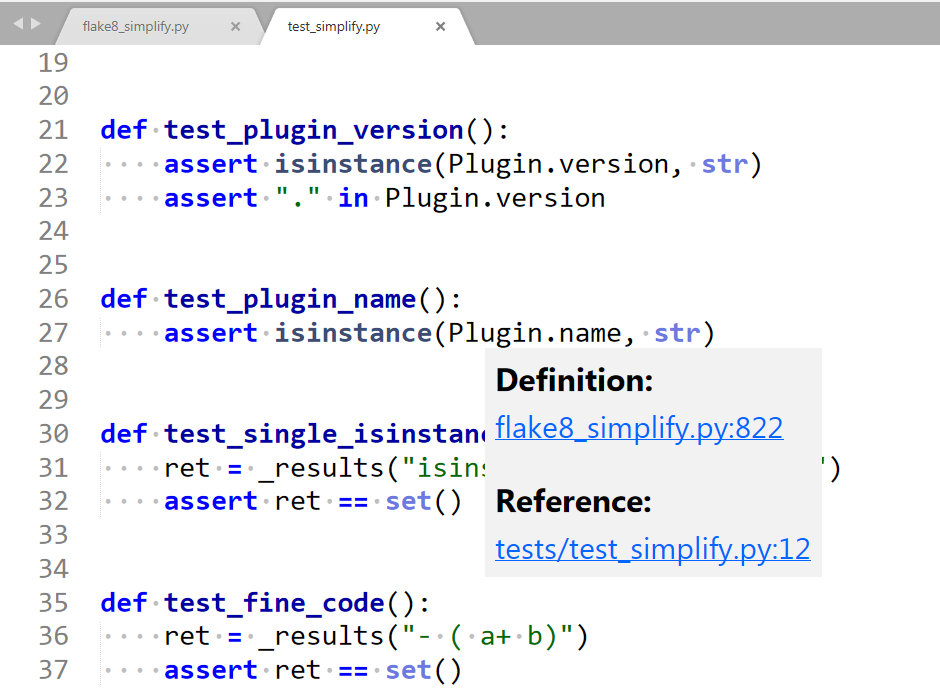

Sublime Text is an editor developed by Jon Skinner. It is available for free, but it will ask you every 15th time you save something if you would like to buy it. I bought Sublime Text because I use it on a daily basis. I love this editor ❤️
The core reasons why I use Sublime Text are performance and minimalism. Sublime opens when I click on it. Instantly. No delay. I can jump to files quickly. I can close the editor without saving and when I open the editor again, I see the same (“unsaved”) state.
There are also nice features like multiple cursors and plugins.
Speed
Sublime Text is lightning-fast. It opens in less than a second on my ThinkPad T490s. It stores everything, even if you don’t hit Ctrl+S. This means you can at all times just close the editor. The next time you open it, it will tell you that there are unsaved changes 😍
The User Interface
In the screenshot above you can see what I have typically open:
- The main window shows the code.
- At the top over the code, there are tabs for opened files.
- Left of the code, there is a file explorer.
- Right of the code, there is a minimap of the code. This can be helpful to jump to weird sections.
- At the bottom, you see the line and the column of your cursor. You can see the current git branch and the current highlighting (“Python”) option.
Killer Feature: Command Palette
The command palette is a way to reach any functionality of Sublime Text. No more searching in deeply nested menus.
You can open the command palette with the key combination Ctrl + Shift + P. It looks like this:


It does a fuzzy search which means it’s ok to make some typos:


Killer Feature: Customizable Shortcuts
You can set your shortcuts via Preferences → Key Bindings or searching for it via the command palette.
It will open a split window. On the left side, you can see the defaults. On the right side, you can see your personal settings:


Tab interactions
You can close a tab with Ctrl+W, just like in Chrome. You can switch to the first tab with Alt+1, to the second with Alt+2, …
You can open a new file with Ctrl+N — just like you would open a new window in Chrome.
Jump to Line
Ctrl+G to jump to a line. This is super handy when you’re debugging.
Goto File
Ctrl+P to go to any file in the current workspace. With fuzzy search again 🎉
Find / Replace all
Ctrl+F to find something, Ctrl+H to replace. You can also use regex! Definitely a feature I don’t want to miss. This is pretty cool in combination with multiple cursors!
Distraction-Free Mode
Shift+F11 switches in distraction-free mode. You just see the code. No mini-map, no file explorer, no footer. This is helpful if you want to show another developer something.
Autocompletion
The autocompletion of Sublime Text is mostly text-based. This means if you have never used a function you just imported, the autocompletion will not properly work.
Also, what I miss are hints for parameters of functions you’re using.
Jump to Definition
“Jump to definition” works like this: You hover over … well, just about anything. Let’s call it a symbol. The editor then will figure out where the symbol was defined.
Some developers love this feature, but I rarely use it. Sublime provides this:


Debugging
Sublime Text does not have any debugging features. You have to use an IDE or pdb for that.
Plugins
Sublime Text has a vivid plugin community on packagecontrol.io. You need to install package control first.
BracketHighlighter
Highlighting the matching bracket helps me to understand an expression better. I use BracketHighlighter to support me.
Colorsublime
People prefer different color themes for their editors. Not only dark and light themes but more specific ones. For example, I love the TextMate theme. You can install those via Colorsublime.
requirementstxt
requirementstxt is a syntax highlighting package for requirements.txt files.
Customization
We have already seen that the theme and the keybindings are customizable. With plugins, you can even go further and expand syntax highlighting capabilities. Another important part of customization is workspaces. You can open them, switch them, and have settings such as ignored files stored per workspace. In a Python project, you might want to ignore __pycache__ directories in the file browser and when you jump to files.
Summary
Sublime Text is a lightning-fast, distraction-free editor with all features I need 95% of the time. This is especially sensible key bindings, syntax highlighting, and search/replace. What I miss sometimes are debugging features and hints for function parameters.
More in this series
This article is part of my series about Python for Beginners:
- Part 1: How to start Python Development on Windows 10 (Anaconda Edition)
- Part 2: A Beginner’s Guide to Python Development on Windows 10
- Part 3: Python Editors in Review: Sublime Text
- Part 4: Visual Studio Code — Python Editors in Review
- Part 5: PyCharm Professional — Python Editors in Review